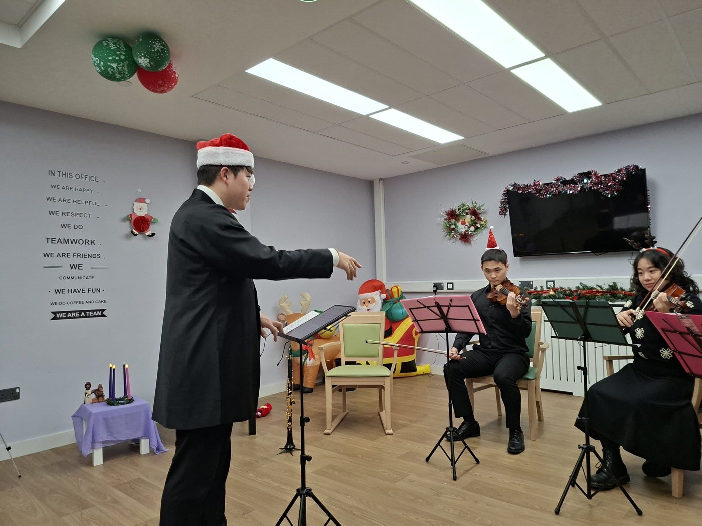

가장 문턱이 낮은 문.
리코더는 손과 호흡에 부담이 적고, 만족스러운 첫 소리까지가 짧고, 값이 싸고, 무엇보다 함께 부는 악기입니다. 그래서 아무것도 해 본 적 없는 분들에게 맞습니다.
악보를 미리 읽을 줄 알아야 하지 않고, 진도를 따라가려고 집에서 혼자 연습해야 하지도 않습니다. 악보와 주간 유인물은 저희가 직접 만들어 인쇄합니다. 참가자 부담은 없습니다.
- 기간
- 한 학기 · 주 1회 · 회당 60–90분
- 대상
- 완전 초보 — 악보를 읽을 줄 안다고 전제하지 않습니다
- 악기
- 소프라노 리코더 €8–€15. 직접 구입하시거나, 원가로 구해 드리거나, 빌려 드립니다
- 마무리
- 가족과 친구를 위한 짧은 음악회
- 지금 열려 있는 곳
- Mulhuddart Community Centre, Dublin 15 · 2026년 9월 9일부터 수요일 19:00–20:00 · 무료
어떻게 굴러가는가
만족스러운 첫 소리는 1주차에 나옵니다.
학기의 모양은 아무도 들어오기 전에 이미 정해져 있습니다. 들을 만한 소리에 일찍 닿을 것, 아무도 뒤에 남지 않도록 그룹 전체가 함께 넘어갈 것, 그리고 사람들 앞에서 끝낼 것.
한 과정은 이렇게 만듭니다
누구를 위한 것인가
- 악기를 한 번도 다뤄 본 적 없는 성인과 어르신.
- 음악을 한 번 시도해 보고 ‘나는 음악에 소질이 없다’고 결론지었던 분.
- 개인 레슨보다 여럿이 함께 배우는 쪽이 편한 분.
- 음악만큼이나 매주 집을 나설 이유가 필요한 분.
- 아일랜드에 온 지 얼마 안 되어, 말이 주로 음표인 방이 필요한 분.
무슨 일이 일어나는가
- 둥글게 앉습니다. 열에서 열두 명, 줄도 무대도 없습니다.
- 악보를 보기 전에 호흡과 한 음으로 다 같이 몸을 풉니다.
- 새로운 것은 귀로 먼저 익히고, 그다음에 악보로 봅니다.
- 파트를 나눠 모두가 ‘자기 줄’을 갖습니다.
- 매주 한 곡은 처음부터 끝까지 붑니다. 아무리 짧아도.
기록
지금까지 진행한 것, 그리고 지금 열려 있는 것.
| 회차 | 내용 | 상태 |
|---|---|---|
| 파일럿 — 은퇴 수도자 앙상블 Warrenmount, Dublin 8 | 은퇴 프레젠테이션 수녀 일곱 분. 석 달의 준비 뒤 10주간 주 1회 1시간 합주(2026년 1월 15일–3월 17일), 그리고 Clondalkin Lodge에서 아홉 곡의 부활 음악회. | 종료 · 일곱 분 모두 수료하고 연주 |
| 커뮤니티 과정 Mulhuddart Community Centre, Dublin 15 | 2026년 9월 9일부터 12주, 수요일 19:00–20:00, 무료. 성탄 전 축하 음악회로 마무리합니다. | 모집 중 |
| 표준 사양 새 공간에 제안하는 형태 | 한 학기 15주 주 1회, 회당 60–90분, 회당 약 €10. 무료·감면 자리는 언제나 확보합니다. | 제안 가능 · 공간 문의 환영 |
주장하지 않는 것
파일럿은 음악학사 연구로 기록돼 있습니다 — 교수계획, 논문, 연주 프로그램. 웰빙 연구가 아닙니다. 참가자의 건강 상태를 전후로 측정하지 않았고, 일곱 명 수료를 임상적 결과로 제시하지 않습니다. 2026년 가을 기수부터 간단한 사전·사후 측정과 동의 절차를 도입합니다.
다음 걸음
아무것도 해 본 적이 없다면, 바로 이 과정입니다.
어느 공간인지, 그리고 악기를 해 본 적이 있는지 한 줄로 적어 주세요. ‘전혀 없다’가 가장 흔한 답이고, 이 과정은 그 답을 기준으로 설계돼 있습니다.